Elongated vs Round Toilet Seats: Complete Comparison Guide

Product Researcher | Specializing in bathroom fixtures and toilet accessories
This article contains affiliate links. If you purchase through these links, we may earn a small commission at no extra cost to you. Full disclosure.
Quick Answer: Elongated or Round?
Elongated toilet seats are 2 inches longer (18.5" vs 16.5") and are preferred by most adults for their superior comfort and thigh support. Round toilet seats save 2 to 3 inches of floor space, making them ideal for small bathrooms, powder rooms, and children's bathrooms. Both shapes use the same bolt spacing, but you must match the seat shape to your bowl shape. If your bathroom has room, go elongated. If space is tight, round works perfectly well.
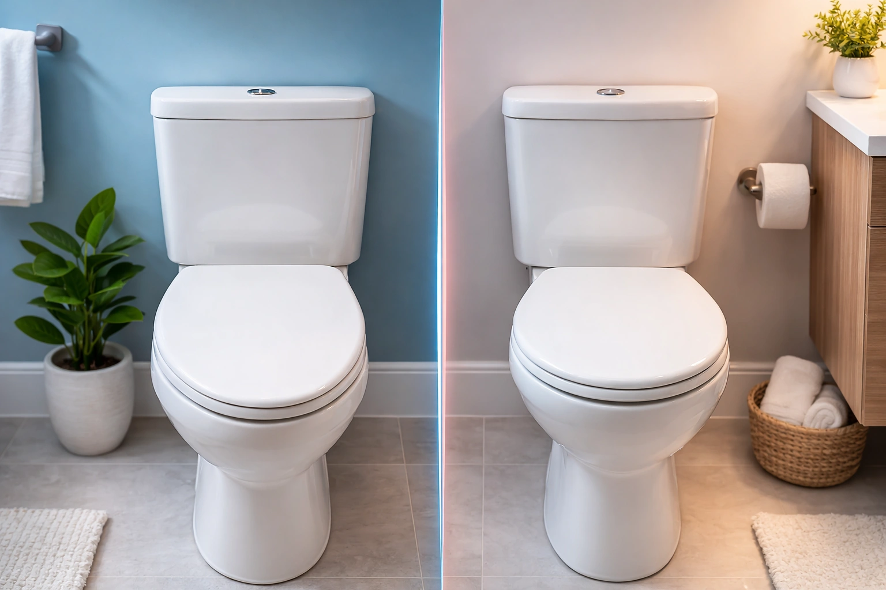
Choosing between an elongated and round toilet seat is one of the most common decisions homeowners face when upgrading their bathroom. It seems like a simple choice, but the shape of your toilet seat affects your daily comfort, bathroom layout, cleaning routine, and even the accessories you can add later.
After researching and comparing dozens of toilet seats across both shapes, we have put together this comprehensive guide that covers every angle of the elongated vs round debate. We will walk you through the real differences in size, comfort, price, and compatibility, show you how to measure your existing toilet, and recommend the best toilet seats of 2026 in each shape category.
Whether you are replacing a worn-out seat, renovating your bathroom, or simply curious about which shape is right for you, this guide has the answers. We also cover how each shape works with popular upgrades like soft-close toilet seats, bidet toilet seats, and heated toilet seats so you can plan ahead.

KOHLER Brevia Slow Close Elongated
The best-value elongated seat with KOHLER quality, slow-close hinges, and a sub-$35 price tag. Fits all standard elongated bowls.
Check Price on Amazon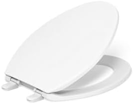
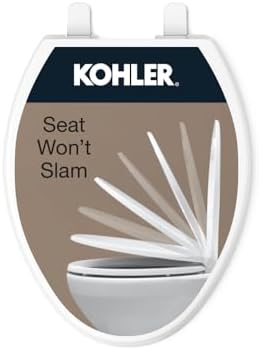
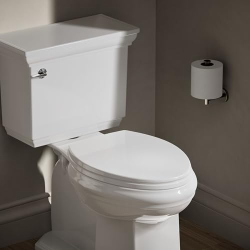
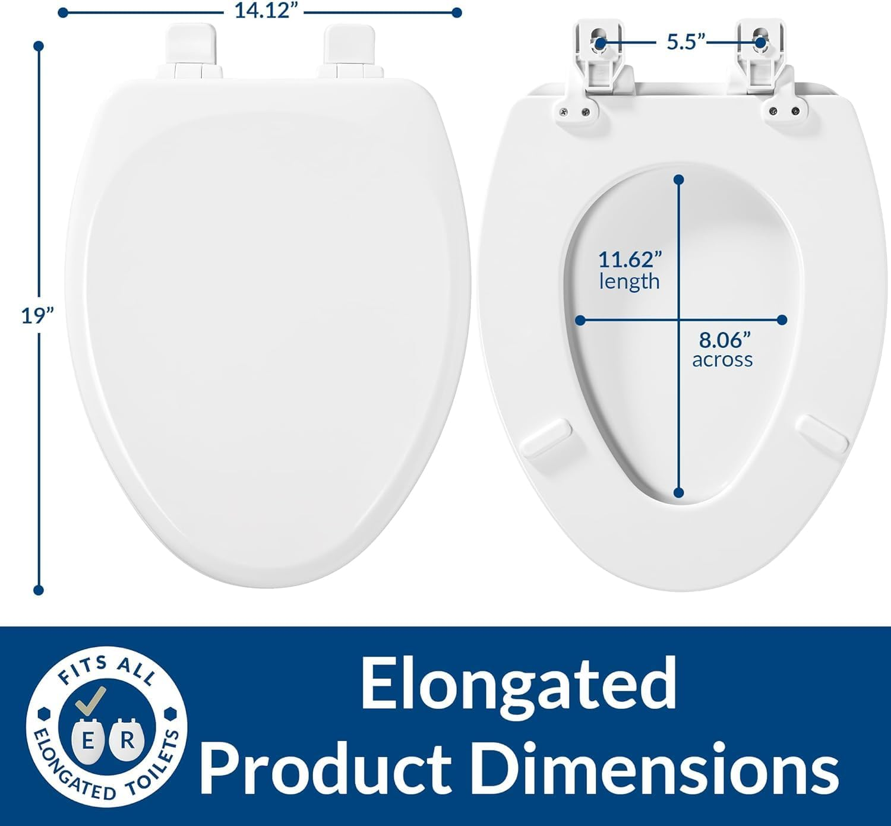
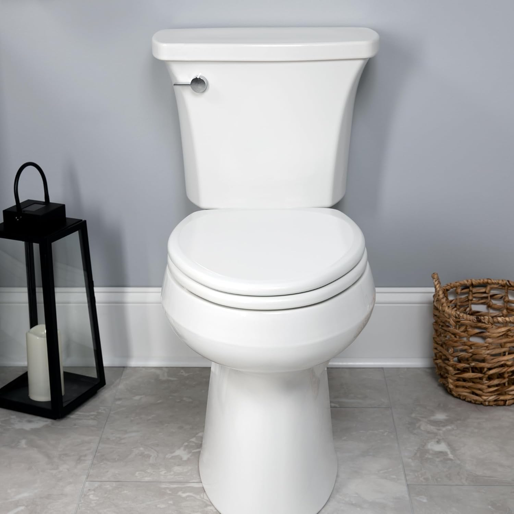
Head-to-Head Comparison Table
Before diving into the details, here is a quick side-by-side comparison of elongated and round toilet seats across every important dimension. This table summarizes the key differences you need to know.
| Feature | Elongated | Round |
|---|---|---|
| Length (bolt holes to front) | ~18.5 inches | ~16.5 inches |
| Width | ~14 inches | ~14 inches |
| Projection from wall | 28-31 inches | 25-28 inches |
| Bolt spacing | 5.5" center-to-center | 5.5" center-to-center |
| Comfort (most adults) | Excellent | Good |
| Best for kids | Less secure feel | More secure feel |
| Space savings | Needs more room | Saves 2-3 inches |
| Typical price range | $18 - $75+ | $15 - $60+ |
| Price difference (same model) | $5-15 more | Baseline |
| Market share | ~70% of new installs | ~30% of new installs |
| ADA recommended | Yes (with comfort height) | No |
| Bidet seat availability | Wide selection | Limited options |
| Best for | Standard/large bathrooms | Small baths & powder rooms |
The bolt spacing is identical on both shapes, which means the mounting hardware is interchangeable. However, the seat itself is not interchangeable between bowl shapes. An elongated seat on a round bowl will overhang dangerously, and a round seat on an elongated bowl will leave a gap at the front. Always match your seat shape to your bowl shape.
Size and Dimensions
The most fundamental difference between elongated and round toilet seats is their length. Understanding these dimensions helps you determine which shape your bathroom can accommodate and, equally important, which shape already matches your existing toilet bowl.
Elongated Seat Dimensions
An elongated toilet seat measures approximately 18.5 inches from the center of the bolt holes to the front edge of the seat. The overall shape is an oval or egg shape, noticeably longer than it is wide. When installed on an elongated bowl, the complete toilet unit typically projects 28 to 31 inches from the wall, depending on the rough-in distance (the gap between the wall and the center of the drain pipe, usually 12 inches).
Round Seat Dimensions
A round toilet seat measures approximately 16.5 inches from the bolt holes to the front edge. The shape is more circular, though not a perfect circle. A complete round toilet unit projects about 25 to 28 inches from the wall, saving you 2 to 3 inches of valuable floor space compared to an elongated model.
Width Is the Same
Both seat shapes share a nearly identical width of approximately 14 inches at their widest point. The bolt hole spacing is also standardized at 5.5 inches center-to-center for both shapes across all major manufacturers in North America. This standardization means you never need to worry about bolt compatibility when shopping for a replacement seat, as long as you match the correct shape.
What Those 2 Inches Mean for Your Bathroom
Two inches may not sound like much on paper, but in a small bathroom, it can be the difference between comfortable clearance and bumping your knees against the wall or vanity. Building codes in most areas require a minimum of 21 inches of clearance in front of the toilet and at least 15 inches from the toilet centerline to any side wall. In a tight half-bath or powder room, choosing a round toilet can help you meet these minimums while still having a functional space. For more on fitting your bathroom, see our toilet seat installation guide.
Comfort and Ergonomics
Comfort is the number one reason most people choose one shape over the other, and it is the category where elongated seats have a clear advantage for the majority of adult users. Here is a detailed breakdown of how body type, age, and intended use affect the comfort equation.
Why Most Adults Prefer Elongated
The extra 2 inches of length on an elongated seat translates to meaningfully more seating surface for your thighs. For adults of average height or taller, this additional support reduces pressure points and makes longer periods of sitting noticeably more comfortable. The oval opening also provides more room in the front, which many users find more hygienic and less cramped during daily use.
Elongated seats are especially preferred by taller individuals (over 5'10") whose longer thighs benefit from the extra support surface. Broader or heavier individuals also tend to find elongated seats more comfortable because the oval shape distributes weight more evenly across the seat rim.
When Round Seats Win on Comfort
Round seats are not inherently uncomfortable. For petite adults and children, round seats can actually feel more secure because the smaller opening reduces the sensation of instability that some smaller users experience on elongated seats. Many pediatricians recommend round toilets for children's bathrooms for exactly this reason.
If your household includes young children who are transitioning from a potty, a round toilet combined with a potty training seat is often the most practical setup. However, you can also find excellent potty training adapters that fit elongated bowls.
Comfort by Body Type Summary
- Tall adults (5'10"+): Elongated strongly preferred for thigh support
- Average adults: Elongated preferred, round works fine
- Petite adults: Either shape works well; some prefer round
- Children: Round can feel more secure; training seats help both shapes
- Seniors with mobility issues: Elongated with comfort height recommended; consider a raised toilet seat
- Heavier individuals: Elongated distributes weight more evenly
Material Matters for Comfort Too
Beyond shape, the material of your toilet seat significantly affects comfort. A cold plastic seat in winter is uncomfortable regardless of shape. If temperature comfort matters to you, consider heated toilet seats or natural wood seats like the Bemis 1500EC enameled wood seat


 , which feels warmer to the touch than plastic. For extra cushioning, padded toilet seats add a soft layer that some users prefer.
, which feels warmer to the touch than plastic. For extra cushioning, padded toilet seats add a soft layer that some users prefer.
Price Comparison
One of the most common misconceptions about toilet seat shapes is that elongated seats cost significantly more than round ones. In reality, the price difference is minimal, and both shapes are available at every price point.
Average Prices by Shape
Here is what you can expect to pay across different quality tiers:
| Price Tier | Elongated | Round |
|---|---|---|
| Budget (basic plastic) | $15 - $25 | $12 - $20 |
| Mid-range (soft-close) | $25 - $50 | $20 - $45 |
| Premium (wood, quick-release) | $45 - $80 | $35 - $65 |
| Bidet seats | $25 - $700+ | $25 - $400+ |
Why Elongated Costs Slightly More
When you compare the same model in both shapes, the elongated version is typically $5 to $15 more. This is simply because a larger seat requires more raw material. For example, the KOHLER Cachet comes in both shapes: the elongated Cachet
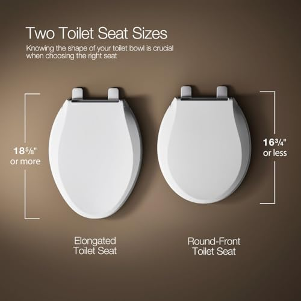
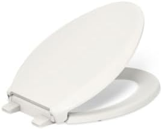
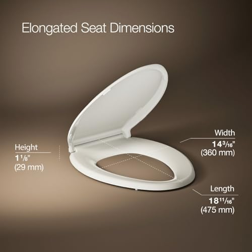
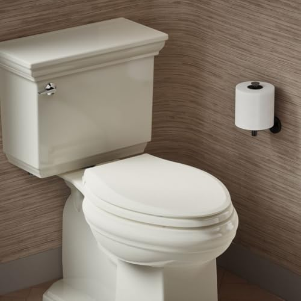
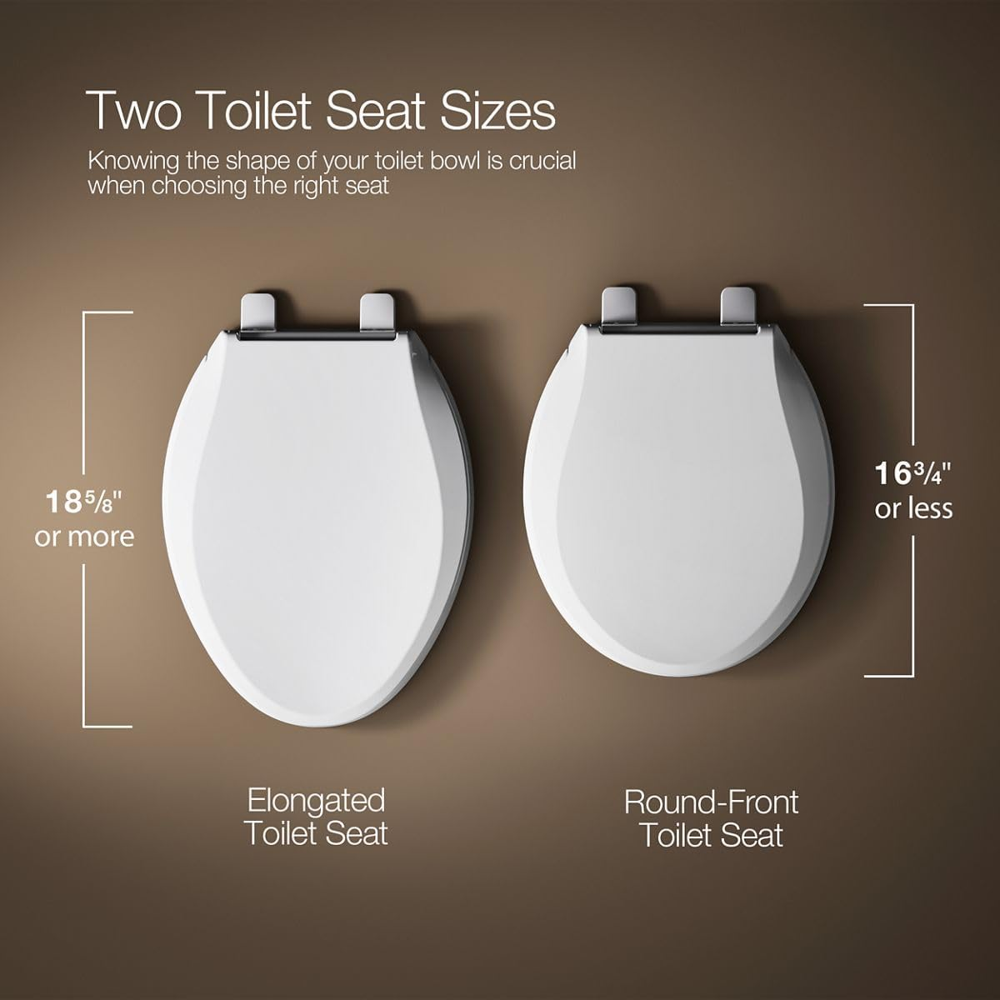
 retails for $60.08 while the round Cachet
retails for $60.08 while the round Cachet
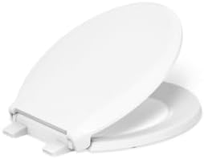


 is $48.59 -- a difference of about $11.
is $48.59 -- a difference of about $11.
Budget-Friendly Options
If you are looking for the best value, the Bemis 1500EC enameled wood elongated seat at just $18.56 with over 40,000 positive reviews is hard to beat. On the round side, basic seats from Mayfair and Bemis start under $20. Price should not be the deciding factor between shapes since the difference is negligible compared to the years of daily use you will get from any toilet seat.
Compatibility and Fit
Understanding compatibility is critical before you buy. The most important rule is simple: match your seat shape to your bowl shape. Here is everything you need to know about making sure your new seat fits properly.
Will an Elongated Seat Fit a Round Bowl?
Technically, yes, the bolts will align because both shapes use the same 5.5-inch bolt spacing. However, the elongated seat will overhang the front of the round bowl by approximately 2 inches. This creates a dangerous, unstable seating surface that can shift, pinch skin, and may crack the seat or bowl over time. We strongly advise against this mismatch for safety reasons.
What About Universal Toilet Seats?
Some manufacturers sell seats marketed as "universal fit." These typically have an adjustable hinge system that accommodates slight variations in bolt spacing, but they are still designed for one specific bowl shape (elongated or round). A truly shape-universal seat does not exist because the bowl rim profile is fundamentally different between the two shapes. Always check the product specifications and verify whether the seat is made for elongated or round bowls before ordering.
How to Measure Your Toilet (Step-by-Step)
If you are unsure which bowl shape you have, follow these steps to measure. You do not need to remove your existing seat. For a more detailed walkthrough, see our toilet seat replacement guide.
- Find the bolt holes: Look at the back of your toilet bowl where the seat attaches. You will see two bolt holes (or the bolts themselves if a seat is installed).
- Measure to the front: Place the end of your tape measure at the center point between the two bolt holes. Stretch the tape in a straight line to the very front outer edge of the bowl rim.
- Read your measurement:
- 16.5 inches or less = Round bowl. Buy a round seat.
- 18 to 18.5 inches = Elongated bowl. Buy an elongated seat.
- Right at 17 inches = Likely a "compact elongated" bowl. Use an elongated seat.
- Verify bolt spacing: Measure the distance between the centers of the two bolt holes. Standard is 5.5 inches. If yours differs significantly (some TOTO and European models use proprietary spacing), you may need a brand-specific seat.
- Check bowl width: Measure the widest point of the bowl opening. Standard is approximately 14 inches for both shapes.
Style and Bathroom Aesthetics
The shape of your toilet contributes more to your bathroom's overall look than you might expect. Since the toilet is often the largest fixture in a small bathroom, its proportions set the visual tone for the entire space.
Elongated: Modern and Streamlined
Elongated toilets have a sleek, contemporary profile that pairs well with modern bathroom designs. The smooth oval lines complement floating vanities, wall-mounted faucets, and clean geometric tile patterns. In a medium or large bathroom, an elongated toilet looks proportional and intentional. Interior designers overwhelmingly specify elongated models for new construction and renovations because they align with current design trends.
Round: Classic and Space-Efficient
Round toilets have a more compact, traditional appearance that works well in vintage, cottage, or space-challenged bathrooms. In a small powder room, a round toilet maintains visual balance by not overwhelming the limited floor area. The rounded profile can also complement curved fixtures and softer bathroom design themes. If your bathroom has a pedestal sink, rounded mirrors, and classic subway tile, a round toilet fits the aesthetic naturally.
Color and Material Options
Both shapes are available in the same color and material options from all major manufacturers. White remains the most popular color for toilet seats by a wide margin, but you can find both elongated and round seats in bone, biscuit, almond, black, and specialty colors. Material choices (polypropylene plastic, enameled wood, thermoset/duroplast) are also equally available in both shapes. For distinctive style, wooden toilet seats offer a warm, natural look in either shape.
Special Features by Shape
If you are planning to add features beyond a basic seat, the shape of your toilet can affect your options. Here is how special features break down between elongated and round.
Soft-Close Hinges
Soft-close (also called slow-close or quiet-close) seats are available in both shapes from every major brand. We recommend soft-close hinges for every bathroom, regardless of shape. They eliminate slamming, protect the porcelain bowl from damage, and are safer in homes with children. The price premium for soft-close is typically only $10-20 over a standard seat. See our best soft-close toilet seats roundup for top recommendations.
Bidet Seats
This is where elongated bowls have a significant advantage. The vast majority of bidet toilet seats are designed for elongated bowls first. While some manufacturers offer round-compatible bidet seats, the selection is much more limited, especially for electric bidet seats with heated water, air dryers, and night lights. If you think you might want to upgrade to a bidet seat in the future, having an elongated toilet gives you far more options.
Heated Seats
Similar to bidet seats, most heated toilet seats are designed primarily for elongated bowls. Some models are available in round versions, but expect fewer choices. If heated comfort is a priority, check availability in your bowl shape before making other purchasing decisions.
Quick-Release and Tool-Free Installation
Quick-release hinges (allowing you to remove the seat for cleaning with a button press) and tool-free installation systems (like KOHLER's ReadyLatch) are available in both shapes. These convenience features do not depend on seat shape and are worth considering regardless of which shape you choose.
Raised and Accessibility Seats
For users with mobility challenges, raised toilet seats for seniors are available for both elongated and round bowls. However, the ADA specifically recommends elongated bowls paired with comfort-height toilets (17-19 inch seat height) for the most accessible setup. If accessibility is a primary concern, elongated is the better foundation.
Our Top Picks: Best Elongated and Round Seats
Based on our research, customer reviews, and value analysis, here are our top recommendations for each shape category.
1. KOHLER Brevia Slow Close Elongated Toilet Seat
Best For: Families wanting a reliable, affordable elongated seat with soft-close
- Slow-close lid and seat prevent slamming
- Color-matched polypropylene plastic construction
- Grip-Tight bumpers prevent shifting on the bowl
- Quick-attach hardware for easier installation
- KOHLER brand quality and warranty
Pros
- Outstanding value under $35
- Reliable slow-close mechanism
- Anti-shift bumpers keep seat stable
- Trusted KOHLER brand
Cons
- Not tool-free installation
- Plastic can feel cold in winter
The KOHLER Brevia delivers everything most households need in an elongated seat at a price that is hard to argue with. The slow-close mechanism works smoothly and quietly, the Grip-Tight bumpers keep the seat from shifting during use, and the overall build quality is what you expect from KOHLER. Over 10,000 buyers have rated it 4.4 out of 5 stars, making it one of the most consistently well-reviewed elongated seats on the market.
Where the Brevia falls slightly short compared to premium options like the KOHLER Cachet is in the hinge system. Installation requires basic tools (included), while the Cachet offers tool-free ReadyLatch mounting. For most buyers, this minor inconvenience is well worth the $30 price savings.
Check Price on Amazon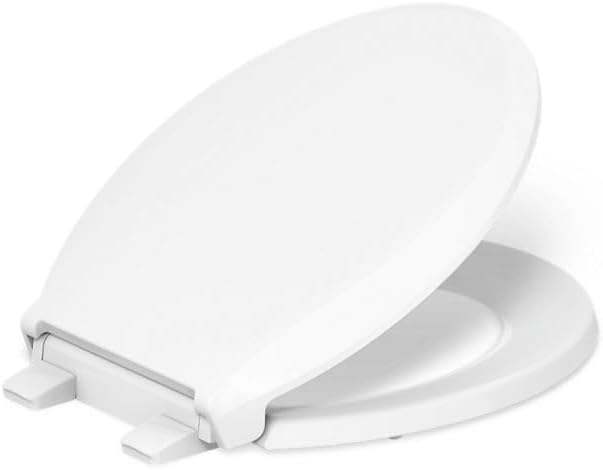
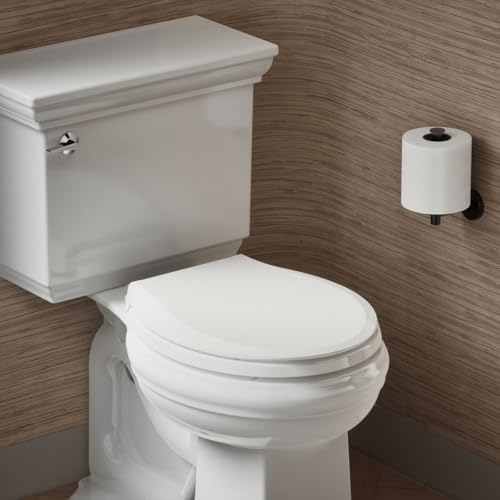
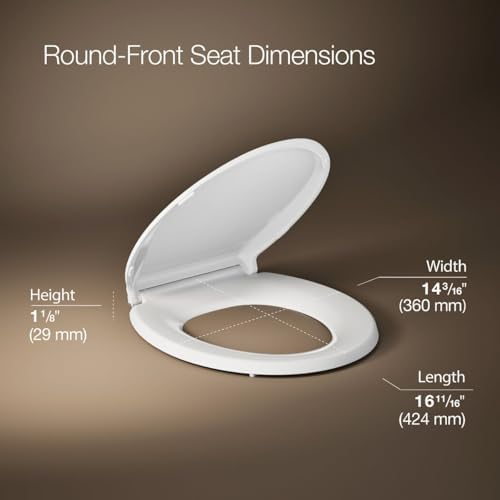
2. KOHLER Cachet ReadyLatch Round Toilet Seat
Best For: Anyone wanting the easiest-to-install round seat with premium features
- ReadyLatch system: completely tool-free installation
- Quiet-close lid and seat
- Snap off for cleaning with one hand
- Grip-Tight bumpers for a secure fit
- 41,000+ positive customer reviews
Pros
- Zero-tool installation and removal
- Most reviewed round seat on Amazon
- Quiet-close is whisper-quiet
- Snap-off design for easy cleaning
Cons
- Higher price than basic round seats
- Plastic construction (not wood)
The KOHLER Cachet has earned its position as the best-selling round toilet seat on Amazon for good reason. The ReadyLatch system is genuinely revolutionary: you snap the seat onto the bowl in seconds with no tools, no fumbling with bolts, and no stripped threads. When it is time to clean, you press a button and the entire seat lifts off in one motion. No other round seat makes maintenance this effortless.
With over 41,000 reviews averaging 4.4 stars, the Cachet has been battle-tested across tens of thousands of bathrooms. The quiet-close mechanism is reliable and consistent, closing slowly and softly every time. At $48.59, it costs more than budget round seats, but the ReadyLatch convenience and KOHLER durability justify the premium for most buyers.
Check Price on Amazon
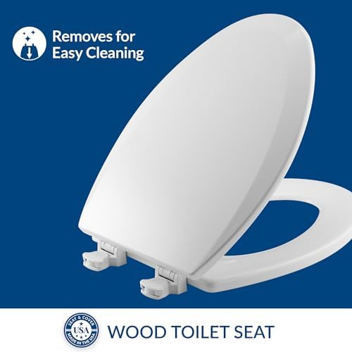
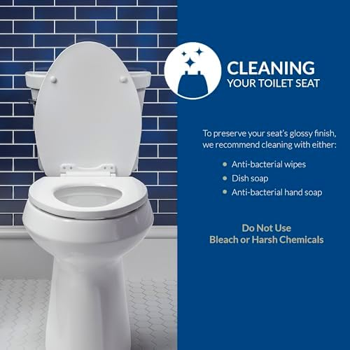
3. Bemis 1500EC Lift-Off Wood Elongated Toilet Seat
Best For: Budget-conscious buyers who want a solid wood seat that feels warm
- Enameled wood construction (warmer than plastic)
- Lift-Off hinges for easy seat removal
- STA-TITE fastening system stays tight over time
- Scratch and stain resistant finish
- 40,000+ verified positive reviews
Pros
- Unbeatable price under $20
- Wood feels warmer than plastic
- Easy removal for cleaning
- 40K+ reviews, 4.4 stars
Cons
- No soft-close mechanism
- Heavier than plastic seats
The Bemis 1500EC proves that you do not need to spend a lot to get a quality toilet seat. At just $18.56, it is one of the most affordable name-brand elongated seats available, and its enameled wood construction offers something that plastic seats cannot: a surface that does not feel ice-cold in winter. The enamel coating resists stains, chips, and scratches, keeping the seat looking clean for years.
The Lift-Off hinge system lets you remove the seat for thorough cleaning by twisting and lifting, and the STA-TITE fastening system keeps the bolts from loosening over time, which is a common complaint with cheaper seats. The only meaningful downside is the lack of soft-close hinges. If you want quiet closing, step up to the KOHLER Brevia. But if you want the best value for the money and prefer the warmth of wood, the Bemis 1500EC is a proven performer with over 40,000 satisfied customers.
Check Price on AmazonQuick Comparison of Our Picks
| Seat | Shape | Price | Rating | Key Feature |
|---|---|---|---|---|
| KOHLER Brevia | Elongated | $30.81 | 4.4/5 | Slow-close + value |
| KOHLER Cachet | Round | $48.59 | 4.4/5 | ReadyLatch tool-free |
| Bemis 1500EC | Elongated | $18.56 | 4.4/5 | Wood, under $20 |
The Verdict: Which Should You Choose?
After comparing every aspect of elongated and round toilet seats, the choice comes down to two primary factors: your bathroom size and your existing bowl shape. If you already have a toilet installed, you must match the seat to the bowl. If you are choosing a new toilet, here is our definitive guidance.
Choose Elongated If...
- Your bathroom has 30+ inches of clearance in front of the toilet
- You prioritize adult comfort and thigh support
- You may want to upgrade to a bidet or heated seat later
- You need ADA compliance or accessibility features
- You are doing new construction or a full renovation
- You prefer the largest selection of seats and accessories
Choose Round If...
- Your bathroom has under 28 inches of clearance
- You have a small bathroom, half-bath, or powder room
- Your home has an existing round bowl you are keeping
- The bathroom is primarily used by children
- You want to maximize floor space for other fixtures
- You prefer a classic or traditional bathroom aesthetic
Our Bottom Line
For most households, elongated toilet seats offer the best overall experience. They are more comfortable for adults, have a wider range of upgrades and accessories available, and cost only marginally more than round equivalents. They account for 70% of new installations for good reason.
However, round seats remain an excellent choice for space-constrained bathrooms, children's bathrooms, and homes with existing round toilets. There is nothing wrong with choosing round -- it is not the inferior option, just the more compact one. The best toilet seat is the one that matches your bowl, fits your space, and meets your comfort needs.
Our overall best pick: KOHLER Brevia Slow Close Elongated ($30.81) for elongated bowls. For round bowls: KOHLER Cachet ReadyLatch Round ($48.59). For budget: Bemis 1500EC Wood ($18.56).
Need help choosing the right seat for your specific situation? Browse our best toilet seats of 2026 guide for more options across every category, or check out our specialized guides for soft-close seats, bidet seats, and heated seats.
Frequently Asked Questions
What is the difference between elongated and round toilet seats?
Elongated toilet seats measure approximately 18.5 inches from the bolt holes to the front edge and have an oval shape. Round seats measure about 16.5 inches and are more circular. Both use the same standard 5.5-inch bolt spacing, but you must match the seat shape to your bowl shape. Elongated seats provide more seating area and are preferred by most adults, while round seats save space and work better in small bathrooms.
Can I put an elongated seat on a round toilet?
Technically the bolts will align since both shapes use the same spacing, but the elongated seat will overhang the front of the round bowl by about 2 inches. This creates an unstable, unsafe seating surface that can shift during use. We strongly recommend against it. Always match your seat shape to your bowl shape for safety and proper function.
Which toilet seat shape is more comfortable?
Most adults find elongated seats more comfortable because the extra 2 inches of length provides better thigh support and a more spacious front opening. Taller and larger individuals especially benefit from the elongated shape. However, children and petite adults may actually prefer round seats because the smaller opening feels more secure. Comfort also depends on material, padding, and seat height.
Are elongated toilet seats more expensive than round?
Only slightly. When comparing the same model in both shapes, the elongated version typically costs $5 to $15 more due to using more material. Budget elongated seats start around $18 (like the Bemis 1500EC), while premium soft-close models run $30 to $75. The price difference between shapes is small enough that it should not be the deciding factor in your purchase.
How do I know if my toilet is elongated or round?
Measure from the center point between the two bolt holes at the back of the bowl to the very front outer edge of the bowl rim. A measurement of 16.5 inches or less indicates a round bowl. A measurement of 18 to 18.5 inches indicates an elongated bowl. If your measurement is right at 17 inches, you likely have a compact elongated bowl and should use an elongated seat. Visual shortcut: round bowls look circular from above, while elongated bowls are distinctly oval.
Related Articles
Complete Your Bathroom Upgrade
Our network of expert review sites covers every bathroom essential: